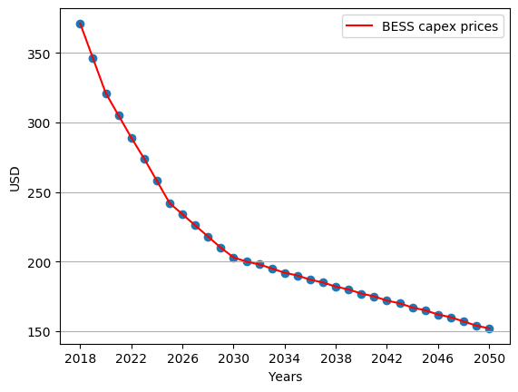
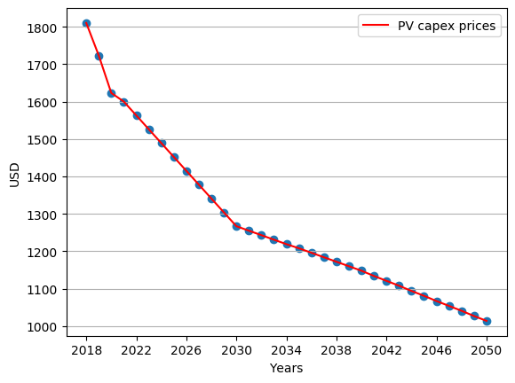
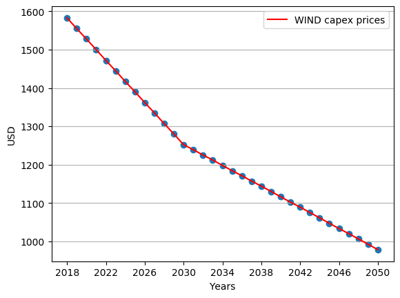
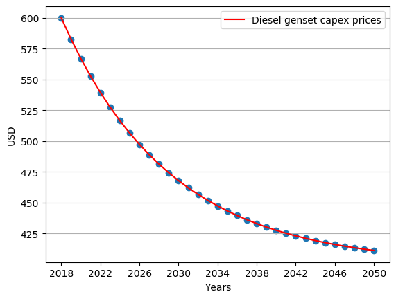
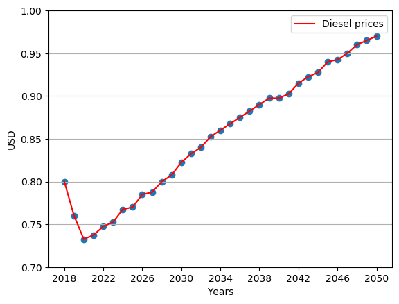
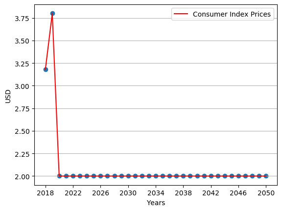

Multiyear analysis¶
Most of the methodologies found in literature to compute the sizing of IMGs consider one single year for the analysis. However, by considering this, these methodologies are implicitly assuming that the capital, operational, and maintenance expenditures will remain constant during the lifetime of the projects (20 to 25 years). These kinds of methodologies only consider the interest rate to compute future values of capital, operational, and maintenance. Nevertheless, this is not a straightforward justifiable assumption, especially considering that renewable energy sources’ costs are decreasing fast in the last years. Moreover, new policies taxing carbon emissions can significantly benefit renewable energy projects in the future. To have a better understanding of the variations in prices in the future, the following figure is introduced.
     {kind=link}
{kind=link}
{kind=link}
{kind=link}
{kind=link}
{kind=link}
Hint
BESS capital expenditures [atb_data],
PV capital expenditures [atb_data],
Wind capital expenditures [atb_data],
Diesel generator capital expenditures.
Diesel price [energy_outlook],
Carbon Tax price [tax_data].
These figures shows the trends in capital expenditures for different energy sources for the following years. By using a multiyear analysis, it is possible to capture those trends in the prices. However, a methodology that uses one single year approach can not incorporate these trends. This assumption does not seem appropriate for future replacements of the energy sources.
Reference [Pecenak2019] classifies multiyear methodologies in two main categories: the forward-looking model and the adaptive model. On one side, the forward-looking model deals with an optimization formulation that has as a horizon the lifetime of the IMG project (20 to 25 years). This approach has the advantage of being able to integrate future information. However, the enormous size of the optimization formulation can make the problem difficult to solve. Additionally, the formulation will require binary variables to integrate the technologies’ replacement, which adds even more complexity to the problem. On the other side, the adaptive model uses a rolling horizon of smaller windows of time (usually one year). This approach does not require binary variables, which represents an advantage. The model easily integrates growth of demand, price forecasts, and energy resources. Additionally, this approach does not require to modify the optimization formulation. Instead, it solves a single year optimization until it reaches the project’s lifetime.
CVXMG chooses to work with the adaptive method. However, despite its advantages, the implementation of the model requires careful attention to previous years’ input parameters. The investment decisions of previous years should be known for the model in each window of time. The following algorithm shows a simplified step by step guide for the multiyear analysis. The following lines provide a brief description of each line of the algorithm.
MultiyearDSMS
Inputs: Weather, forecasted acquisition prices of energy sources, forecasted fuel prices over the lifetime of the IMG project.
Outputs: Tariffs of energy, yearly acquisition, yearly dispatch of energy sources over the life time of the IMG project.
prob_info = Set problem information
historic_data = Save historic weather, save demand data
synthetic_data = create_synthetic_data(historic_data)
for year = 0 in range(lifetime):
prev_data = Read results of previous years
act_param = Actualize solver parameters
resul = yearly_solver(prob_info, synthetic_data[year], prev_data, act_param)
summary[year] = resul
Set problem information¶
This line saves the configuration of the analysis in the variable prob_info. This variable contains a list of the energy sources that the optimization includes, the technical and economic characteristics of those energy sources, the lifetime of the project, and interest rate. This variable contains all the information about the multiyear analysis.
Save historic weather and demand data:¶
This line reads the historic weather and electrical demand data. Afterwards the data is stored in the variable historic_data.
create_synthetic_data(historic_data):¶
This line creates the synthetic data for the multiyear optimization formulation. A single year approach can use the historical data (of one year). However, to build the multiyear optimization formulation, synthetic data is required for the project’s lifetime. The function create_synthetic_data takes as inputs the historical data of weather and electrical demand profiles (one year) and returns as output the synthetic data over the lifetime of the project (20 or 25 years). The function follows a four-step process to create synthetic data for the optimization formulation:
Divide the historical data by months.
Take the data of each month and group it by hours.
Fit each hour group to the probability distributions recommended by the literature to each kind of data (Weibull for wind, Beta for Global Horizontal Radiation, log-normal for the demand, amongst others).
Build the synthetic new profiles by random sampling the fitted probability distributions at each hour and month.
The above-described process is similar to a Gaussian process without a covariance matrix. Two main reasons force to adopt the above-described process and not the well know Gaussian process. The first reason is that the Gaussian process can model only processes that follow a Gaussian distribution. This limitation forces the study to assume that the wind and Global Horizontal Radiation (GHI) follow a Gaussian distribution, which is not accurate. The second reason is that fitting and sampling a Gaussian process consume more computational power and requires more time to build synthetic data than the above-described process. Equation (1) describes the sampling process to create the synthetic data.
where \(SD_{t}\) represents the Synthetic Data at time \(t\). This variable represents the electrical demand, wind speed, global horizontal radiation, temperature, and others. \(\psi_{m,h}\) represents the monthly/hourly fitted distributions using the historical data.
Read results of previous years:¶
This line read the results of the previous years and store the values in variable prev_data. This variable contains the capacities of the energy sources acquired in the past. Additionally, this variable contains a detailed register of the costs paid for buying those energy sources in previous years.
Actualize solver parameters:¶
This part of the algorithm actualizes the cost parameters of the solver. These parameters include the acquisition costs of the energy sources and the fuel costs of that year in particular.
yearly_solver(prob_info, synthetic_data[year], prev_data, act_param):¶
The function \(yearly\_solver\) contains the formulation described at the beginning of this section (Equations (2) to (15)). This function solves the DCSP optimization formulation for over one year. This function returns the capacities of the energy sources to install in that year, the dispatch of the energy sources and the energy tariffs for the customers. Additionally, this function returns the payments of each one of the stakeholders of the project.
summary[year] = resul:¶
This line save the results of \(yearly\_solver\). Summary is a list that contains the results of each year.